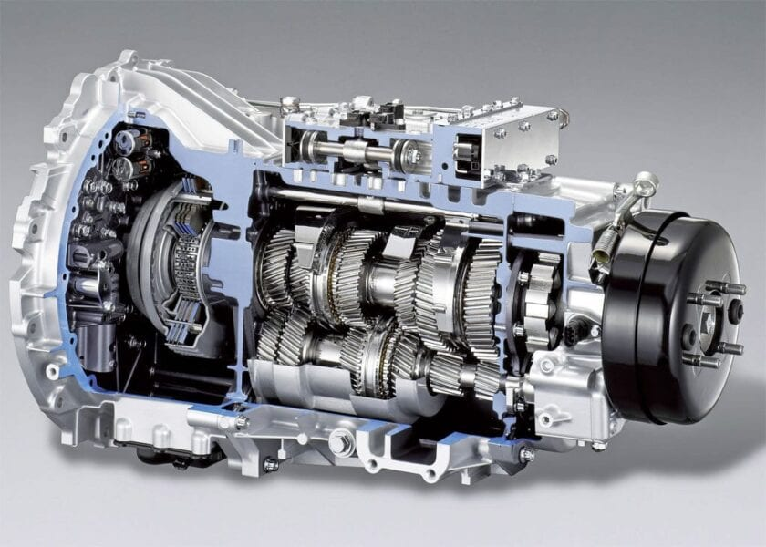

Sistemul de transmisie preia impulsul de la motor și îl direcționează către roțile motoare – pentru a se declanșa, este nevoie de o serie de ansambluri secundare, care au o poziție semnificativă în realizarea întregului proces. Din acest sistem fac parte ambreiajul, cutia de viteze, reductorul distribuitor, arborii planetari, diferențialul și 3 tipuri de transmisii (principală, cardanică și finală). Pentru a putea înțelege procedeul în complexitatea lui, este necesar să acorzi o atenție deosebită caracteristicilor pe care le are fiecare element constituent:
Ambreiajul
Ambreiajul are rolul de a cupla și decupla motorul de la transmisie, treptat și progresiv. În momentul în care mișcarea de rotație este inițiată, acesta transmite putere mai mare (prin cuplare) sau întrerupe deplasarea (prin decuplare).
Acesta este alcătuit dintr-un disc care este acoperit cu un material – la rândul lui, el se află pe volant. Atunci când asupra ambreiajului este aplicată o forță externă, cele două elemente se vor roti, datorită forței de frecare. Prin acest fenomen, puterea motorului este trimisă, mai departe, sistemului de transmisie.
Cutia de viteze
Cutia de viteze oferă indicii despre activitatea sa chiar în numele pe care îl poartă – controlează viteza, dar poate modifica și forța de tracțiune. Aceasta se află în strânsă legătură cu mecanismul ambreiajului, deoarece conține toate treptele necesare rulării progresive a motorului.
Reductorul distribuitor
Reductorul distribuitor poate fi găsit doar în structura automobilelor care au punți motoare multiple și care sunt echipate pentru rezistență la drumuri grele. El este un fel de schimbător care are capacitatea de a dubla treptele de viteză ale unui schimbător propriu-zis.
Transmisia cardanică și transmisia principală
Transmisia cardanică transmite impulsul motor de la cutia de viteze către transmisia principală, iar aceasta, la rândul ei, preia puterea și o dă mai departe către arborii planetari și către diferențial. Aceștia duc momentul motor către roțile motoare ale autovehiculelor.
Transmisia finală
Ea are abilitatea de a mări raportul total de transmitere a puterii motoare, însă poate fi găsită doar la vehicule de capacitate mare, precum camioane sau autobuze.
Așadar, rolul transmisiei este semnificativ în funcționarea și eficiența autovehiculului. Orice mașină se bazează pe un astfel de sistem, ce reprezintă o caracteristică principală, care este, de asemenea, indispensabilă.
Tipuri de transmisie:
-
Cutia manuala
-
Cutia automata (Cutia automata cu convertizor, CVT, DSG, etc)
Cutia manuala
Transmisia manuala este foarte apreciata in Europa, probabil acesta este motivul pentru care inca nu s-a trecut la cele automate in totalitate.
O data cu evolutia tehnicii insa, tendinta spre automatizare a crescut si din ce in ce mai multe vehicule mici sau mari ies de pe linia de productie echipate cu transmisii automate.
Tipul de transmisie manuala este mult mai simplu decat cel automat insa la utilizare necesita mai multa atentie si efort. Cu toate acestea daca intrebam profesionistii, multi opteaza pentru sistemul de transmisie manuala.
Cei mai multi spun ca se simt mai stapani pe vehicul daca isi schimba singuri vitezele. Transmisia manuala este mai usor de controlat in medii grele de munca.
Avantajele la transmisia manuala.
- Este mai usor de controlat in medii de lucru grele
- Soferul poate scoate mai multa forta din motor
- Transmisiile manuale sunt mai rezistente la uzura mecanica
- Intretinerea este mai usoara si mai ieftina
- Consumul de carburant este mai usor de controlat
- Frana de motor este mult mai buna
Majoritatea acestor avantaje au ceva in comun, necesitatea de a controla vehiculul in totalitate pentru ca acesta sa poata sa scoata performante mai mari.
Mecanismul transmisiei manuale este un mecanism durabil si cu o intretinere regulata acesta nu se va strica foarte usor.
Transmisia manuala lucreaza la temperaturi de 60-70 de grade care nu afecteaza uleiul din cutie asa ca acesta isi pastreaza calitatile mult mai mult timp.
Dezavantajele la transmisia manuala:
- Necesita mai multa atentie la utilizare
- Necesita forta pentru apasarea ambreiajului
- Periodic soferul conduce cu o singura mana pentru a schimba vitezele
- Poate fi obositor fizic si psihic in comparatie cu o transmisia automata
- Este necesara utilizarea corecta a acesteia pentru a nu deteriora transmisia
CVT
Spre deosebire de alte tipuri de cutii de viteze, care transmit cuplul cu angrenaje, în variatoare, acest cuplu este transmis printr-o oțel, cu curea în V flexibilă sau cu lanț. Variatorul centurii în V este format dintr-una sau, în cazuri foarte rare, din două centuri de antrenare. Transmisia include încă două șaibe și două discuri conice orientate unul spre altul.
Presiunea hidraulică, forța centrifugă și forța arcului sunt utilizate pentru a apropia conurile și pentru a le separa. Discurile conice sunt înclinate cu 20 de grade pentru a ajuta centura să se deplaseze pe suprafața șaibei cu cea mai mică rezistență posibilă.
Mecanismul variatorului se bazează pe o schimbare constantă a diametrelor curelei, în funcție de condițiile de funcționare ale motorului. Diametrul șaibului este schimbat folosind o unitate de acționare specială. Când porniți mașina, scripetele de acționare ale variatorului au diametrul cel mai mic (discurile conice sunt amplasate cât mai departe).
Pe măsură ce viteza crește, centura se deplasează la diametrul mai mare al rolei de antrenare. În acest fel, transmisia CVT poate menține viteza optimă a motorului, oferind în același timp o putere maximă și oferind o dinamică foarte bună a vehiculului.
Cu alte cuvinte, variatorul lanțului V obține o eficiență maximă cu cea mai mică pierdere de putere posibilă în timpul rotirii. În cutii de viteze cu variatoare se utilizează un sistem de control electronic, datorită căruia se realizează o schimbare sincronă a diametrului șaibelor în conformitate cu condițiile de funcționare ale motorului.
CVT-ul este controlat de un selector de viteze, iar modurile de control sunt similare cu cele ale unei transmisii automate, diferența fiind că variadorul are o funcție de selectare a vitezei fixe. Această funcție rezolvă în principal problema psihologică a șoferilor cărora le este dificil să se obișnuiască cu o viteză constantă a motorului în timpul conducerii.
Avantaje:
- utilizarea eficientă a puterii motorului datorită reglării maxime a sarcinii șasiului cu viteza arborelui cotit
- este obținută eficiența optimă a combustibilului
- se realizează o transmisie continuă a cuplului
- nivel excelent de confort în timpul conducerii
Dezavantaje:
- restricții privind cantitatea de cuplu transmis
- complexitate tehnologică ridicată a proiectării
- costurile ridicate de intretinere
Cutia automata cu convertizor de cuplu
Majoritatea automobilistilor sunt familiarizați cu transmisia automată clasică. Să analizăm pe scurt despre ce este vorba. Într-o transmisie manuală, atunci când schimbați viteza, trebuie să apăsați pedalele de ambreiaj și să mutați pârghia în poziția corespunzătoare. În transmisiile automate nu trebuie să faceți aproape nimic, deoarece acestea sunt controlate complet automat (prin intermediul unei unități de control electronic).
Avantaje:
- schimbare de viteze lină și complet automată pentru un confort incredibil de conducere
- ambreiajul nu are nevoie de înlocuire periodică
- mașina se poate adapta cu ușurință la modul dvs. de conducere
- ușurința în funcționare, ceea ce permite chiar șoferilor fără experiență să învețe rapid cum să funcționeze o transmisie automată
- Oferă un răspuns mai rapid la schimbările de viteză
Dezavantaje:
- dispozitiv complex
- preț mai mare comparativ cu o transmisie manuală
- costuri de întreținere mai mari
- un consum mai mare de combustibil și o eficiență ușor mai mică în comparație cu o transmisie manuală
DSG

Cutia de viteze DSG, denumită și transmisie cu dublu ambreiaj, este o variantă a transmisiei automate și este unul dintre tipurile de cutii de viteze care câștigă un interes din ce în ce mai mare.
Ce este special despre acest tip de transmisie? Sistemul folosește două ambreiaje pentru schimbări de viteză extrem de rapide, făcând modificări subtile în schimbările de viteză. În plus, acest tip de transmisie este însoțit, de obicei, de o pârghie suplimentară pe volanul vehiculului care permite schimbări manuale ale angrenajului în cazul în care șoferul decide (schimbătoare de paletă). Când un ambreiaj este angajat la angrenajul curent, celălalt ambreiaj pregătește următoarea viteză, reducând semnificativ timpul de schimb. Vehiculele cu ambreiaj dublu nu au o pedală de ambreiaj, deoarece se activează și se decuplează automat.
Majoritatea treptelor DSG folosesc un selector automat pentru a schimba modurile de conducere. În modul „Drive” sau „Sport”, transmisia cu dublu ambreiaj funcționează ca o transmisie automată standard. În modul „D”, transmisia se schimbă mai devreme în trepte de viteză mai mari pentru a minimiza zgomotul motorului și a maximiza economia de combustibil, în timp ce în modul „S”, schimbările descendente sunt ținute puțin mai mult pentru a permite motorului să își mențină puterea.
Avantaje:
- are caracteristicile unei cutii manuale si combina confortul si comoditatea unei transmisii automate
Dezavantaje
- limitarea transmisiei - are un numar fix de viteze, care nu este intotdeauna capabila sa mentina cea mai buna viteza a motorului
- consum ridicat de combustibil
- costuri ridicate